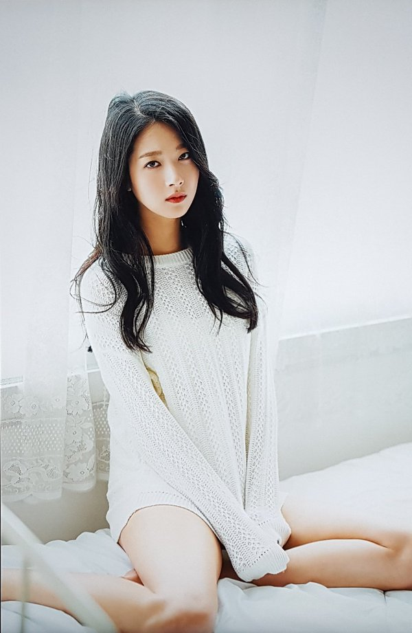

|  | |
|---|---|
| 본명 | 박민하(朴珉河) |
| 활동명 | 민하 |
| 출생 | 1991.6.27(만27세) |
| 국적 | 대한민국 |
| 신체 및 혈액형 | 169cm, 47kg, A형 |
| 소속 그룹 | 없음(前 나인뮤지스 멤버) |
| 소속사 | 매니지먼트 비강 |
| 데뷔일 | 2010년 8월 12일 싱글 1집 'Let's Have A Party |
| 별명 | 밥민하, 꽃단애, 짹짹이, 미인하, 정예, 알파카 등등 |
| 가족 | 부모님, 남동생 |
| 학력 | 서울갈산초등학교 목일중학교 목동고등학교 동국대학교 연극영화학과 |
|
대한민국의 배우이자, 나인뮤지스의 前 원년멤버. | |